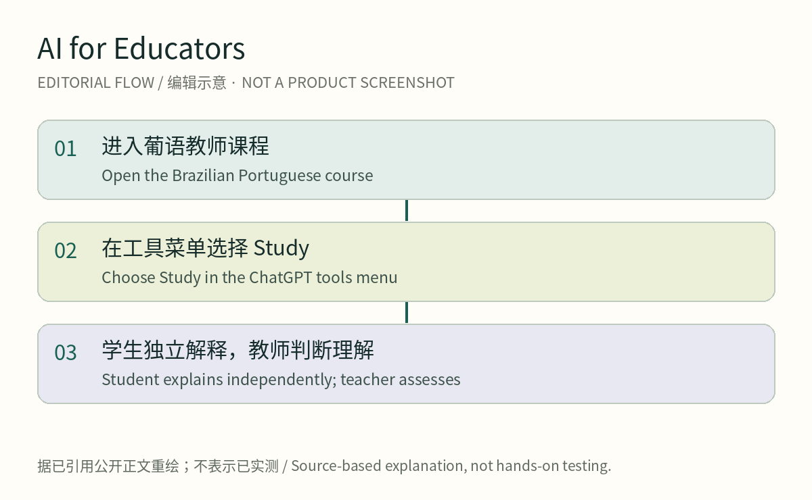
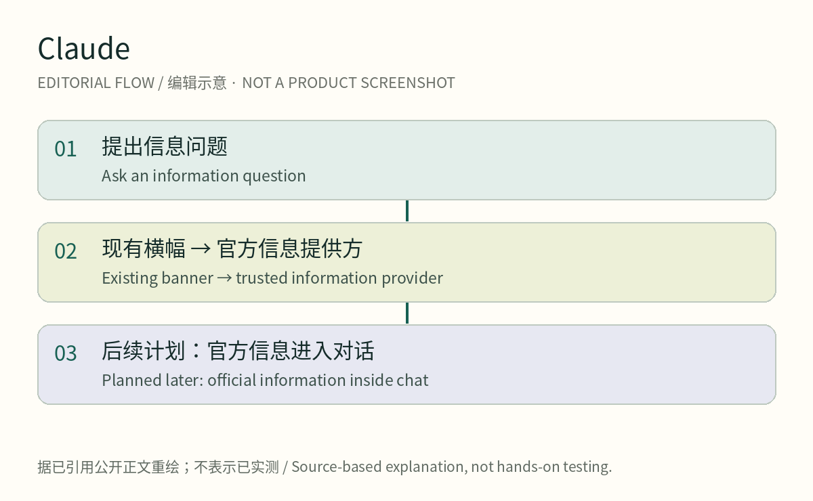
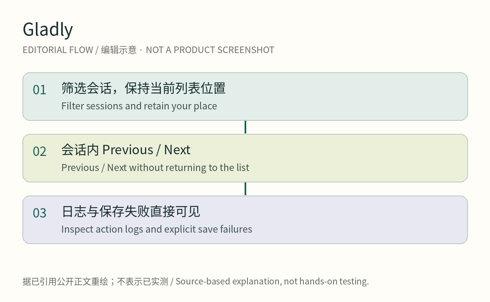
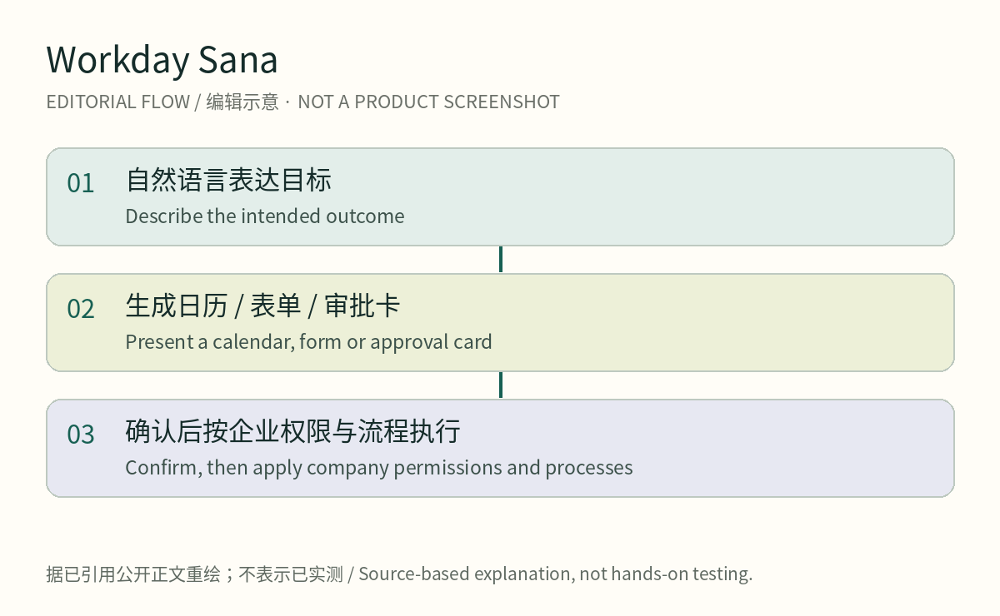
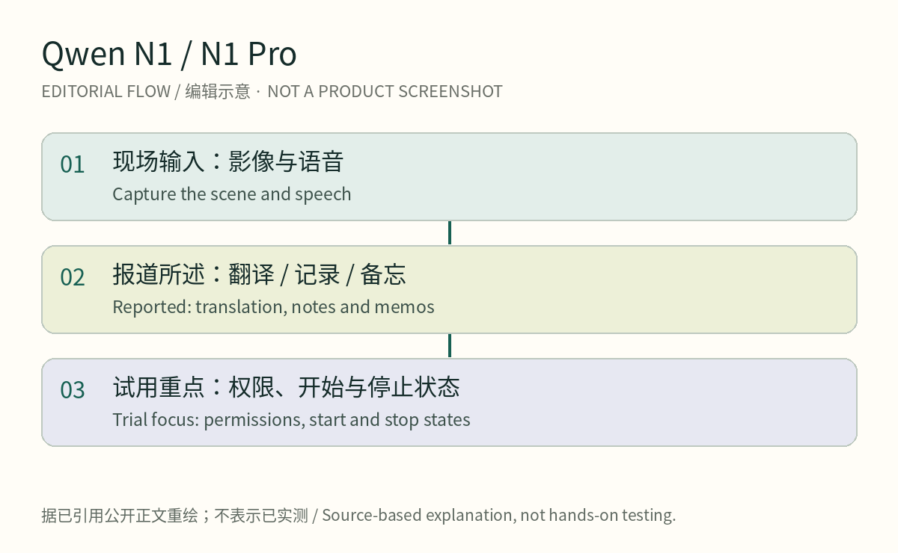

officialscanned
Read dated OpenAI, Anthropic, Gladly and Workday materials; preserve date precision and rollout stages.
2026-10-15 · America/Toronto
October 15 backfill | Cutoff 17:12:57 UTC. Five product observations; date-only items carry a 24-hour uncertainty label, with Oct 13 explicitly a 72-hour supplement. About 15 minutes including figures and source checks. Figures are source-based editorial diagrams; original image import was blocked.
openai-educators-ptbrconfirmed product

AI for Educators is a free OpenAI Academy course for primary, secondary and higher-education teachers. The October 15 announcement adds Brazilian Portuguese; it does not launch Study Mode for the first time.
[Oct 15, date precision; 24-hour boundary uncertain] The course covers lesson planning, activities, assessment and communication. The new language can make this guidance easier to approach while leaving pedagogical decisions with teachers.
Start from the official course link. For a classroom exercise, choose Study in ChatGPT’s tools menu and request one question at a time, waiting for each answer. A teacher can first test a familiar subject, then ask students to explain the idea and formulate a new question without consulting the chat.
The questioning workflow is existing functionality. We did not sign into the course or conduct classroom testing. The announcement provides a date without a publication time or timezone, so exact membership in the preceding 24 hours remains uncertain.
claude-voting-informationconfirmed product

Anthropic’s October 14 announcement describes the information pathway in US Claude.ai: an existing TurboVote banner, followed later this month by official voting information collected by Democracy Works. This is a report on product sourcing and interaction, not voting instructions.
[Oct 14; exact 24-hour boundary uncertain] The planned change moves information from an external destination into the conversation, organized for the user’s state. Election-night official results are another announced stage; neither should be described as universally live today.
People can ask Claude.ai about registration, polling places or dates and follow the existing provider banner. For the forthcoming embedded answers, our editorial test would be whether the source and jurisdiction remain clear. That is an assessment criterion, not a verified interface feature or accuracy measurement.
The announcement concerns US Claude.ai and schedules the new data connection for later this month. It does not establish an exact activation time, complete account coverage or new pricing. We did not test a signed-in session; local official channels remain the authority for current procedural information.
gladly-review-navigationconfirmed product

Gladly is a customer-service and AI-conversation workspace. Its October 14 release-note section updates AI Sessions, Signals review and workflow editing. The page was originally published October 7; we preserve that distinction.
[Oct 14 section update; exact 24-hour boundary uncertain] Reviewers can move Previous/Next inside a session while retaining list position. Signals reviews autosave with explicit retry/discard behavior, and reopening a workflow offers to recover unsaved browser edits.
Review a filtered session list without repeatedly returning to it. For a failed workflow, open the Action log from the expanded Use step in the conversation review panel. These changes keep diagnosis in context; we have not measured time saved.
Autosave still has a failure path. The same notes flag an October 15 change for Gladly-supplied WhatsApp numbers: setup requires Support to relay a short-lived verification code. Self-owned numbers differ. Check the team’s registration arrangements rather than assuming a fully self-service setup.
workday-sana-homeconfirmed product

Workday announced its new Sana Home experience on October 13, combining HR, finance and IT tasks and decisions. This is a 72-hour supplement, not a launch today.
An employee states an outcome and the system presents forms, calendars, approval cards or visualizations for that task. The company attributes the dynamic interface to Jev, while actions follow existing permissions, policies and business processes with human confirmation where required.
For leave, request the outcome and confirm dates in the resulting picker. Longer-running work can retain tasks, approvals and agent activity. Our HCI reading is that a visible object and confirmation step make an intended action easier to inspect; we have not measured productivity gains.
Workday says the Home experience is available, with administrators choosing enablement and whether it becomes default. Sana Concierge remains for early adopters, with general availability expected in Q1 2027. These are separate availability states within the same announcement.
qwen-n1weak/unverified

October 13 launch coverage describes Qwen N1 and N1 Pro AI glasses as wearable entry points for a personal agent. This is a China hardware supplement within 72 hours. We lack a directly readable manufacturer specification and do not treat coverage as independent hands-on evidence.
[72-hour supplement] Our October 6 issue covered the September 22 unveiling. The new increment is October 13 retail-launch coverage and standard-kit pricing. Capture, translation, memos and Pro eye/iris features remain background, not newly launched features.
For meetings, travel or translation, our suggested trial starts by checking the actual app entry, paired-phone requirements, permissions and region. Then inspect how one task begins, records and stops. These are editorial evaluation steps, not claims that particular status controls are implemented.
IT Home lists launch prices from RMB 2,899 for N1 and RMB 3,399 for Pro standard kits in China, excluding subsidy conditions and any stock guarantee. We did not verify payments, battery life, health interpretation or recognition accuracy.
2026-10-15 · Source radar
Every lane keeps the scanned surface, concrete product signal, evidence gap, and next watch. A scan is not upgraded to a confirmed product fact.
Read dated OpenAI, Anthropic, Gladly and Workday materials; preserve date precision and rollout stages.
Read indexed IT Home coverage and the Xinhua-hosted hardware report; direct IT Home fetch timed out; no comments or hands-on tests.
Searches did not yield sufficient traceable first-hand reproductions; this is a coverage gap, not evidence of no friction.
Startup/Product Hunt searches produced no adequately verified selection in this pass; no quota padding.
Sources & evidence · 2026-10-15T17:12:57Z
2026-10-15 · Source radar
Every lane keeps the scanned surface, concrete product signal, evidence gap, and next watch. A scan is not upgraded to a confirmed product fact.
No in-window paper was verified sufficiently for a product claim; research coverage remains incomplete.
No new patent family, publication date and claims were verified; older glasses patents are not today’s launches.
Added China launch coverage of Qwen N1/N1 Pro; distinguish reported facts from missing manufacturer originals.
The sample emphasizes US enterprise services and a Brazilian Portuguese course; US availability is not global rollout.
Sources & evidence · 2026-10-15T17:12:57Z
2026-10-15
Fresh entries require dated, substantive changes. Background, research, vendor demos and availability are labeled. Full dates, image provenance and selection notes remain in the source ledger; n.d. means date unstated.